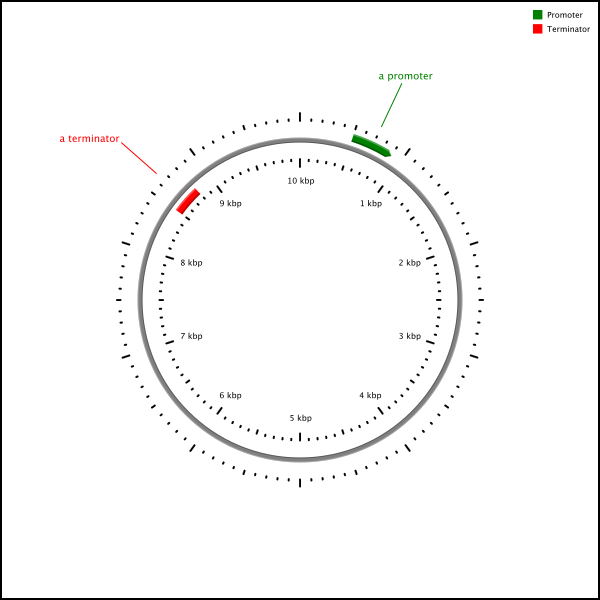

CGView XML
Input can be supplied to the CGView application as an XML (Extensible Markup Language) file. The various elements and attributes in the file are used to describe sequence features (position, type, name, color, label font, and opacity). Optional XML attributes can be included, to control global map characteristics, and to add legends, a title, and footnotes. Once an XML input file is generated, it can be used to create a single map showing the entire sequence, or an expanded view of a particular region. The same input file can also be used to generate a collection of linked images. The linked images allow a genome to be visualized at varying levels of detail, using only a web browser. Because the linked images are pre-rendered, no special software is required to serve the images, or to view them. For more information see creating CGView maps.
Generally the feature information you will want to display will reside in a relational database or a flat file, or some combination of the two. You will need to convert the feature information into an XML file for CGView.
There are six different XML elements in a CGView XML document. Use the links below to view additional information, including lists of the required and optional attributes.
-
cgview - the root element. It has attributes that control the overall appearance of the map (width, height, background color, etc).
-
featureSlot - represents a ring of space for features.
-
feature - used to represent a sequence feature, such as a promoter, or an open reading frame.
-
featureRange - indicates which bases in the sequence should be marked with features.
-
legend - can be used to add text to the map, such as legends, titles, and comments.
-
legendItem - used to represent a single line of text in a legend.
The following sample CGView document shows the how the elements are typically arranged. It describes a map with two featureSlots (each containing a single feature) and a legend containing two entries.
<?xml version="1.0" encoding="ISO-8859-1"?>
<cgview backboneRadius="160" sequenceLength="10000" height="600" width="600">
<featureSlot strand="direct">
<feature color="green" decoration="clockwise-arrow" label="a promoter">
<featureRange start="500" stop="900" />
</feature>
</featureSlot>
<featureSlot strand="reverse">
<feature color="red" decoration="arc" label="a terminator">
<featureRange start="8500" stop="8800" />
</feature>
</featureSlot>
<legend position="upper-right">
<legendItem text="Promoter" drawSwatch="true" swatchColor="green" />
<legendItem text="Terminator" drawSwatch="true" swatchColor="red" />
</legend>
</cgview>
This is the map generated by the above document:

Note: When generating XML for CGView, some characters must be escaped, otherwise they will confuse the XML parser. Consider the hyperlink attribute of the feature element. This attribute can be used to supply a URL for CGView to incorporate into its output, so that clicking on the feature label in the final map can redirect the user to a relevant resource. If any of the following characters appear in the URL, or any other value that will be supplied to an attribute for that matter, they must be escaped:
Special XML characters
|
Character
|
Name
|
Escaped version
|
|
&
|
ampersand
|
&
|
|
'
|
single quote
|
'
|
|
"
|
double quote
|
"
|
|
<
|
less than
|
<
|
|
>
|
greater than
|
>
|
Citing CGView:
|